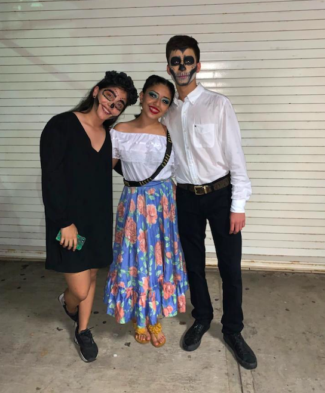

CAFÉ LITERARIO
Ser parte de actividades escolares/familiares como lo es un café literario es, además de una experiencia grata, completamente inolvidable. No solo se vio la respuesta positiva de os padres si no que fue un buen momento junto a mis amgos y compañeros.
Este Café Literario lo hicimos en noviembre con la temática del día de muertos, los alumnos iban vestidos de alebrijes, calaveras, entre otras cosas. Se recitaron poemas, cantaron corridos, hicieron obras, incluso se hizo un altar gigantesco al centro del lugar. Apesar de que esa noché llovió y no pudimos concluir nuestro café literario fue una experiencia muy buena en la que pude trabajar en equipo y analizar las ideas de todos alredor de un solo proyecto.